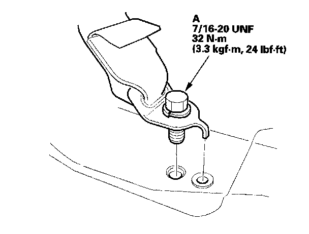
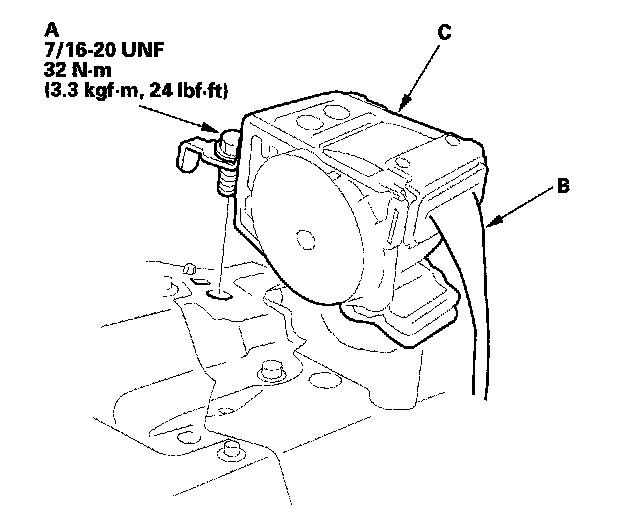
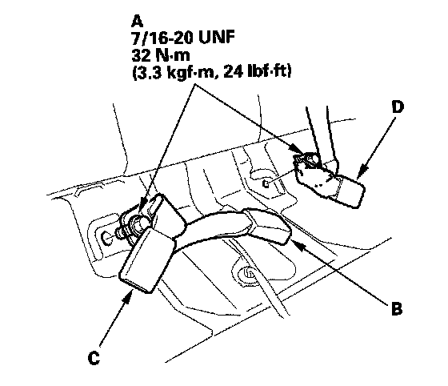
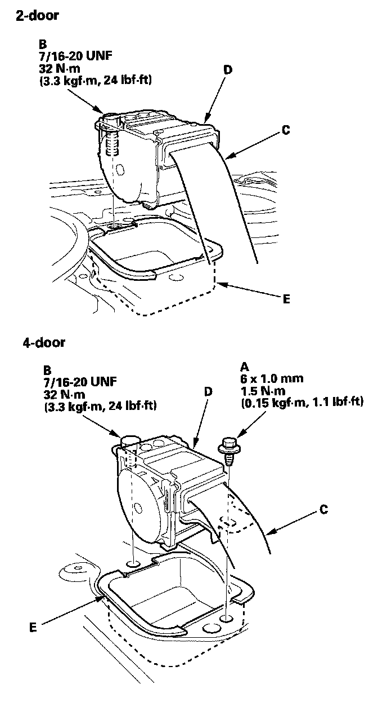
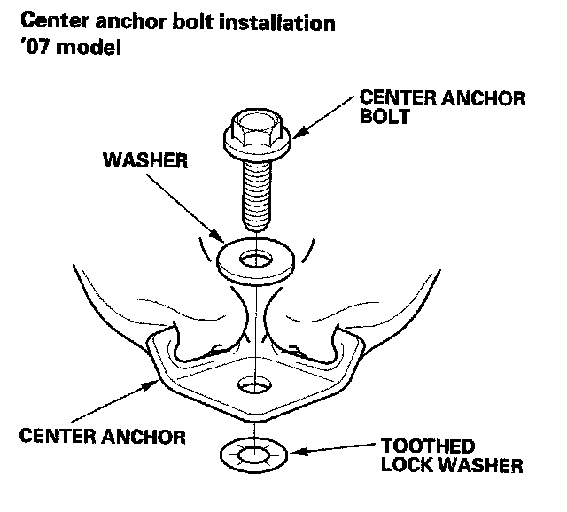

Rear Seat Belt Replacement
Rear Seat Belt ReplacementNOTE: Check the second row seat belts for damage, and replace them if necessary. Be careful not to damage them during removal and installation.
Rear Seat Belt
1. Remove the rear seat cushion.

2. Remove the lower anchor bolt (A).
3. Remove these items:
- 2-door:
- Rear seat-back, fold down, split fold down
- Rear shelf
- Rear shelf extension
- Rear side trim panel
- 4-door:
- Rear seat side bolsters, both sides
- C-pillar trim, both sides
- Rear shelf

4. Remove the retractor bolt (A), then remove the rear seat belt (B) and retractor (C).
5. Install the rear seat belt and retractor in the reverse order of removal, and note these items:
- Apply medium strength type liquid thread lock to the anchor bolts before reinstallation.
- Check that the retractor locking mechanism functions as described.
- Before installing the anchor bolt, make sure there are no twists or kinks in the rear seat belt.
Center Seat Belt and Seat Belt Buckles
1. Remove the rear seat cushion.

2. Remove the center anchor bolts (A), then remove the right seat belt buckle (B), center seat belt buckle (C), and left seat belt buckle (D).
3. Fold both rear seat-backs forward.
4. Remove these items:
- 2-door: Rear shelf
- 4-door:
- Rear seat side bolsters, both sides
- C-pillar trim
- Rear shelf

5. Remove the retractor mounting ET screw (A) (4-door) and the retractor bolt (B), then remove the rear seat belt (C) and retractor (D).
6. Remove the rear center seat belt protector (E).

7. Install the seat belt and buckles in the reverse order of removal, and note these items:
- Apply medium strength type liquid thread lock to the center anchor bolts before reinstallation.
- Tighten the bolts by hand first, then tighten to the specified torque.
- Check that the retractor locking mechanism functions.
- Assemble the washers on the center anchor bolt as shown.
- Before installing the center anchor bolt, make sure there are no twists or kinks in the center belt.
- Make sure the rear center ELR (emergency locking retractor) is pointing straight forward.